Materialpaket Lesespurgeschichten Technik Klasse 8: 3 Lesespuren mit Rätselaufgaben, dreifach differenziert

Materialpaket Lesespurgeschichten Sport Klasse 8: 5 Lesespuren mit Rätselaufgaben, dreifach differenziert

Materialpaket Lesespurgeschichten Politik/Sozialkunde Klasse 8: 3 Lesespuren mit Rätselaufgaben, dreifach differenziert

Materialpaket Lesespurgeschichten Physik Klasse 8 – Elektrizität, Magnetismus und Optik: 10 Lesespuren mit Rätselaufgaben, dreifach differenziert

Materialpaket Lesespurgeschichten Physik Klasse 8 – Wärme und Energie: 12 Lesespuren mit Rätselaufgaben, dreifach differenziert
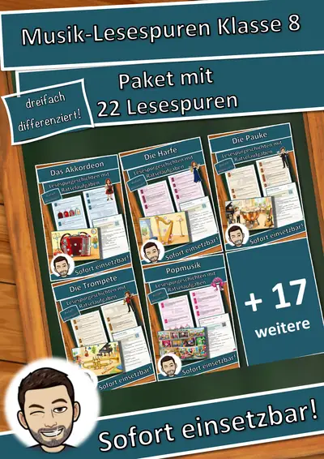
Materialpaket Lesespurgeschichten Musik Klasse 8: 22 Lesespuren mit Rätselaufgaben, dreifach differenziert

Materialpaket Lesespurgeschichten Kunst Klasse 8: 5 Lesespuren mit Rätselaufgaben, dreifach differenziert

Materialpaket Lesespurgeschichten Informatik Klasse 8: 7 Lesespuren mit Rätselaufgaben, dreifach differenziert
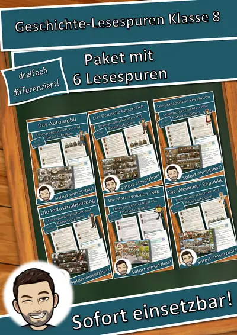
Materialpaket Lesespurgeschichten Geschichte Klasse 8: 6 Lesespuren mit Rätselaufgaben, dreifach differenziert

Materialpaket Lesespurgeschichten Ethik Klasse 8: 6 Lesespuren mit Rätselaufgaben, dreifach differenziert

Materialpaket Lesespurgeschichten Erdkunde Klasse 8 – Landschaften und Naturräume: 22 Lesespuren mit Rätselaufgaben, dreifach differenziert

Materialpaket Lesespurgeschichten Erdkunde Klasse 8 – Wetter, Klima und Naturgefahren: 5 Lesespuren mit Rätselaufgaben, dreifach differenziert
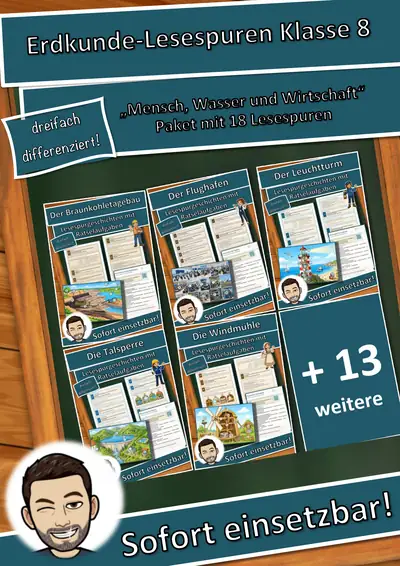
Materialpaket Lesespurgeschichten Erdkunde Klasse 8 – Mensch, Wasser und Wirtschaft: 18 Lesespuren mit Rätselaufgaben, dreifach differenziert

Materialpaket Lesespurgeschichten Chemie Klasse 8 – Stoffe, Feuer und Arbeiten im Labor: 18 Lesespuren mit Rätselaufgaben, dreifach differenziert

Materialpaket Lesespurgeschichten Chemie Klasse 8 – Chemie in Betrieb und Alltag: 13 Lesespuren mit Rätselaufgaben, dreifach differenziert

Materialpaket Lesespurgeschichten Biologie Klasse 8 – Pflanzen und Pilze: 12 Lesespuren mit Rätselaufgaben, dreifach differenziert

Materialpaket Lesespurgeschichten Biologie Klasse 8 – Tiere: Säugetiere und Vögel: 19 Lesespuren mit Rätselaufgaben, dreifach differenziert

Materialpaket Lesespurgeschichten Biologie Klasse 8 – Der Mensch: 18 Lesespuren mit Rätselaufgaben, dreifach differenziert
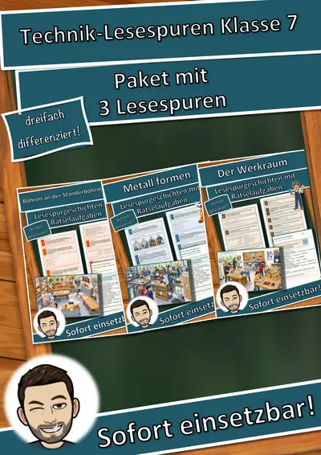
Materialpaket Lesespurgeschichten Technik Klasse 7: 3 Lesespuren mit Rätselaufgaben, dreifach differenziert

Materialpaket Lesespurgeschichten Sport Klasse 7: 7 Lesespuren mit Rätselaufgaben, dreifach differenziert
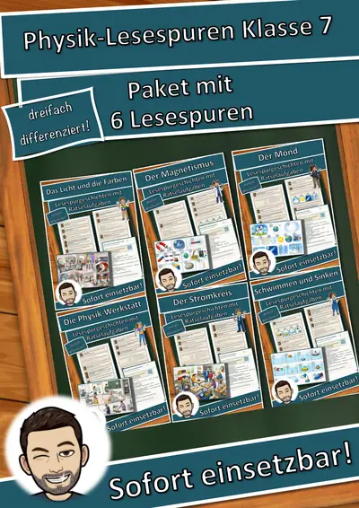
Materialpaket Lesespurgeschichten Physik Klasse 7: 6 Lesespuren mit Rätselaufgaben, dreifach differenziert

Materialpaket Lesespurgeschichten Musik Klasse 7: 8 Lesespuren mit Rätselaufgaben, dreifach differenziert

Materialpaket Lesespurgeschichten Kunst Klasse 7: 6 Lesespuren mit Rätselaufgaben, dreifach differenziert

Materialpaket Lesespurgeschichten Informatik Klasse 7: 8 Lesespuren mit Rätselaufgaben, dreifach differenziert

Materialpaket Lesespurgeschichten Hauswirtschaft Klasse 7: 3 Lesespuren mit Rätselaufgaben, dreifach differenziert
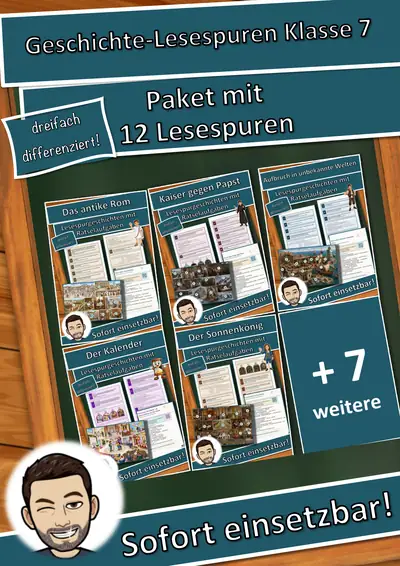
Materialpaket Lesespurgeschichten Geschichte Klasse 7: 12 Lesespuren mit Rätselaufgaben, dreifach differenziert

Materialpaket Lesespurgeschichten Ethik Klasse 7: 7 Lesespuren mit Rätselaufgaben, dreifach differenziert

Materialpaket Lesespurgeschichten Erdkunde Klasse 7: 7 Lesespuren mit Rätselaufgaben, dreifach differenziert

Materialpaket Lesespurgeschichten Deutsch Klasse 7: 4 Lesespuren mit Rätselaufgaben, dreifach differenziert

Materialpaket Lesespurgeschichten Biologie Klasse 7 – Der Mensch und seine Gesundheit: 10 Lesespuren mit Rätselaufgaben, dreifach differenziert
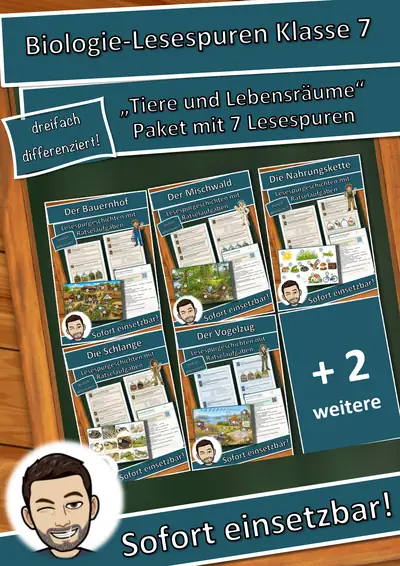
Materialpaket Lesespurgeschichten Biologie Klasse 7 – Tiere und Lebensräume: 7 Lesespuren mit Rätselaufgaben, dreifach differenziert

Materialpaket Lesespurgeschichten Sport Klasse 6: 5 Lesespuren mit Rätselaufgaben, dreifach differenziert
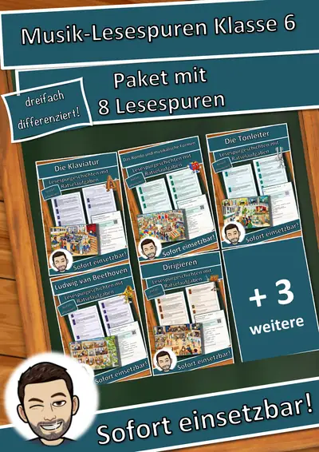
Materialpaket Lesespurgeschichten Musik Klasse 6: 8 Lesespuren mit Rätselaufgaben, dreifach differenziert

Materialpaket Lesespurgeschichten Kunst Klasse 6: 8 Lesespuren mit Rätselaufgaben, dreifach differenziert

Materialpaket Lesespurgeschichten Informatik Klasse 6: 6 Lesespuren mit Rätselaufgaben, dreifach differenziert

Materialpaket Lesespurgeschichten Hauswirtschaft Klasse 6: 4 Lesespuren mit Rätselaufgaben, dreifach differenziert

Materialpaket Lesespurgeschichten Geschichte Klasse 6: 13 Lesespuren mit Rätselaufgaben, dreifach differenziert

Materialpaket Lesespurgeschichten Ethik Klasse 6: 8 Lesespuren mit Rätselaufgaben, dreifach differenziert

Materialpaket Lesespurgeschichten Erdkunde Klasse 6: 5 Lesespuren mit Rätselaufgaben, dreifach differenziert

Materialpaket Lesespurgeschichten Biologie Klasse 6: 4 Lesespuren mit Rätselaufgaben, dreifach differenziert

Materialpaket Lesespurgeschichten Sport Klasse 5: 4 Lesespuren mit Rätselaufgaben, dreifach differenziert

Materialpaket Lesespurgeschichten Sachunterricht Klasse 5: 7 Lesespuren mit Rätselaufgaben, dreifach differenziert
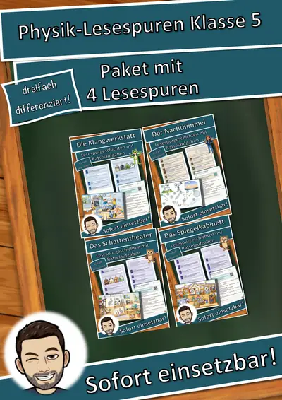
Materialpaket Lesespurgeschichten Physik Klasse 5: 4 Lesespuren mit Rätselaufgaben, dreifach differenziert

Materialpaket Lesespurgeschichten Kunst Klasse 5: 6 Lesespuren mit Rätselaufgaben, dreifach differenziert

Materialpaket Lesespurgeschichten Informatik Klasse 5: 6 Lesespuren mit Rätselaufgaben, dreifach differenziert

Materialpaket Lesespurgeschichten Geschichte Klasse 5: 5 Lesespuren mit Rätselaufgaben, dreifach differenziert

Materialpaket Lesespurgeschichten Ethik Klasse 5: 7 Lesespuren mit Rätselaufgaben, dreifach differenziert
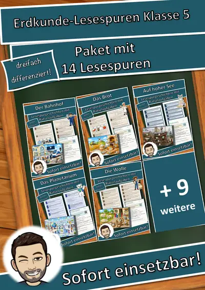
Materialpaket Lesespurgeschichten Erdkunde Klasse 5: 14 Lesespuren mit Rätselaufgaben, dreifach differenziert
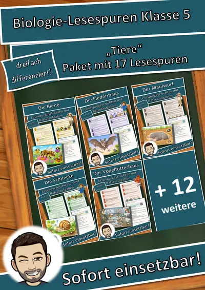
Materialpaket Lesespurgeschichten Biologie Klasse 5 – Tiere: 17 Lesespuren mit Rätselaufgaben, dreifach differenziert

Materialpaket Lesespurgeschichten Biologie Klasse 5 – Pflanzen, Lebensräume und Sinne: 8 Lesespuren mit Rätselaufgaben, dreifach differenziert

Materialpaket Lesespurgeschichten Sachunterricht Klasse 4 – Freizeit, Verkehr und Bräuche: 6 Lesespuren mit Rätselaufgaben, dreifach differenziert

Materialpaket Lesespurgeschichten Sachunterricht Klasse 4 – Tiere, Pflanzen und Natur: 8 Lesespuren mit Rätselaufgaben, dreifach differenziert

Materialpaket Lesespurgeschichten Sachunterricht Klasse 4 – Handwerk, Betriebe und Technik: 22 Lesespuren mit Rätselaufgaben, dreifach differenziert

Materialpaket Lesespurgeschichten Ethik Klasse 4: 4 Lesespuren mit Rätselaufgaben, dreifach differenziert

Materialpaket Lesespurgeschichten Sport Klasse 3: 9 Lesespuren mit Rätselaufgaben, dreifach differenziert
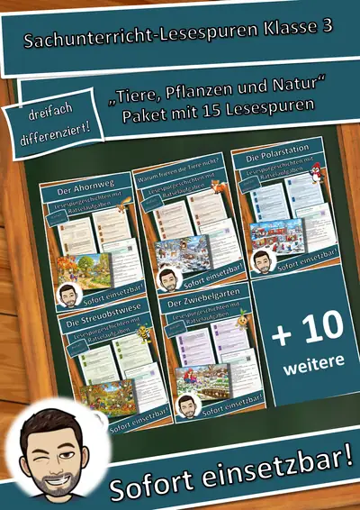
Materialpaket Lesespurgeschichten Sachunterricht Klasse 3 – Tiere, Pflanzen und Natur: 15 Lesespuren mit Rätselaufgaben, dreifach differenziert

Materialpaket Lesespurgeschichten Sachunterricht Klasse 3 – Alltag, Jahreslauf und Technik: 16 Lesespuren mit Rätselaufgaben, dreifach differenziert

Materialpaket Lesespurgeschichten Musik Klasse 3: 9 Lesespuren mit Rätselaufgaben, dreifach differenziert

Materialpaket Lesespurgeschichten Kunst Klasse 3: 9 Lesespuren mit Rätselaufgaben, dreifach differenziert

Materialpaket Lesespurgeschichten Informatik Klasse 3: 8 Lesespuren mit Rätselaufgaben, dreifach differenziert

Materialpaket Lesespurgeschichten Ethik Klasse 3: 9 Lesespuren mit Rätselaufgaben, dreifach differenziert

Materialpaket Lesespurgeschichten Sachunterricht Klasse 2: 4 Lesespuren mit Rätselaufgaben, dreifach differenziert

Materialpaket Lesespurgeschichten Sport Klasse 1: 9 Lesespuren mit Rätselaufgaben, dreifach differenziert
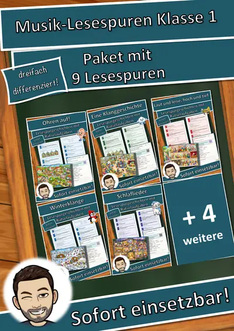
Materialpaket Lesespurgeschichten Musik Klasse 1: 9 Lesespuren mit Rätselaufgaben, dreifach differenziert
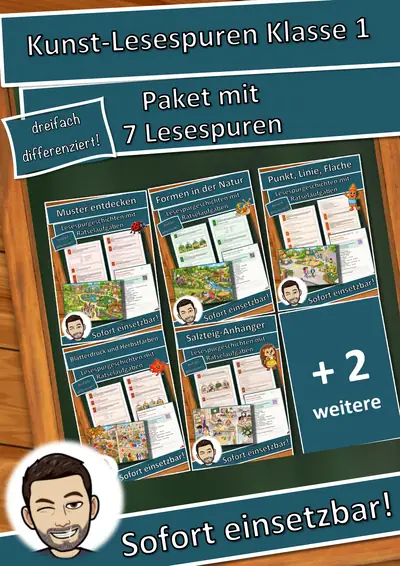
Materialpaket Lesespurgeschichten Kunst Klasse 1: 7 Lesespuren mit Rätselaufgaben, dreifach differenziert

Materialpaket Lesespurgeschichten Informatik Klasse 1: 6 Lesespuren mit Rätselaufgaben, dreifach differenziert

Materialpaket Lesespurgeschichten Ethik Klasse 1: 5 Lesespuren mit Rätselaufgaben, dreifach differenziert

Materialpaket Lesespurgeschichten Biologie Klasse 8 – Lebensräume und Ökologie: 11 Lesespuren mit Rätselaufgaben, dreifach differenziert

Materialpaket Lesespurgeschichten Biologie Klasse 8 – Zellen und Bakterien: 5 Lesespuren mit Rätselaufgaben, dreifach differenziert

Lesespur: Secrets of the Chestnut Tree – Lesespurgeschichte mit Rätseln auf Englisch (Klasse 8)
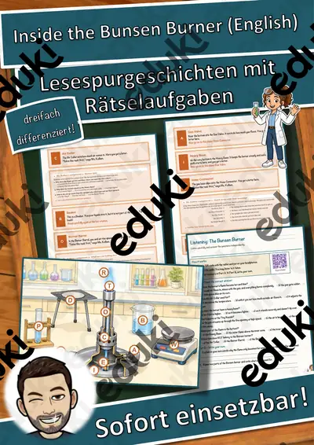
Lesespur: Inside the Bunsen Burner – Lesespurgeschichte mit Rätseln auf Englisch (Klasse 9)

Lesespur: Baking Christmas Cookies – Lesespurgeschichte mit Rätseln auf Englisch (Klasse 8)

Lesespaziergang Materialpaket: 3 Geschichten, 6-fach differenziert – Herbst, Advent, Winter (Klasse 1–4, DaZ)

Lesespaziergang Vögel am Futterhaus – 6-fach differenziert mit Bildkarten, Sternchenaufgaben und Audio (Klasse 1–4)

Lesespaziergang Auf dem Weihnachtsmarkt – 6-fach differenziert mit Bildkarten, Sternchenaufgaben und Audio (Klasse 1–4)

Lesespaziergang Ein Nebeltag im November – 6-fach differenziert mit Bildkarten, Sternchenaufgaben und Audio (Klasse 1–4)
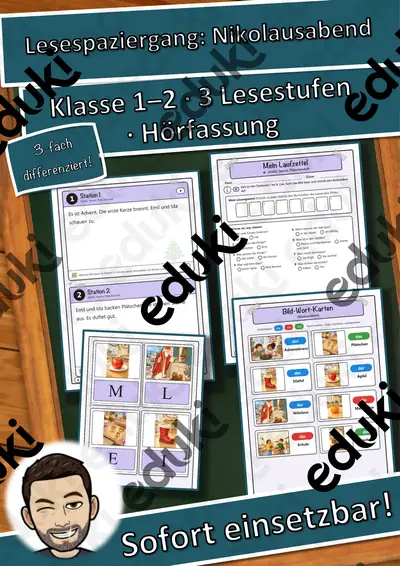
Lesespaziergang Nikolausabend: Stiefel, Sterne, Plätzchenduft – 8 Stationen in 3 Lesestufen mit Hörfassung (Klasse 1–2, DaZ)

Lesespaziergang Tiere im Winter: Pit, der Igel, sucht ein Bett – 8 Stationen in 3 Lesestufen mit Hörfassung (Klasse 1–2, DaZ)

Lesespaziergang Laternenzeit: Linas Laterne – 8 Stationen in 3 Lesestufen mit Hörfassung (Klasse 1–2, DaZ)

Lesespur: Lunar New Year at Lin's Home – Lesespurgeschichte mit Rätseln auf Englisch (Klasse 8)
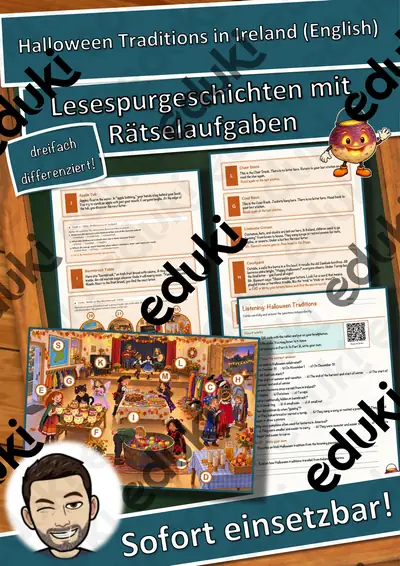
Lesespur: Halloween Traditions in Ireland – Lesespurgeschichte mit Rätseln auf Englisch (Klasse 6)

Lesespur: The Apple Cellar – Lesespurgeschichte mit Rätseln auf Englisch (Klasse 6)

3D-Anhänger Schulanfang – Oktaeder, Diamant und Kugel zum Ausmalen und Basteln, 3-fach differenziert (Klasse 3/4)

3D-Anhänger Sommer – Oktaeder, Diamant und Kugel zum Ausmalen und Basteln, 3-fach differenziert (Klasse 3/4)
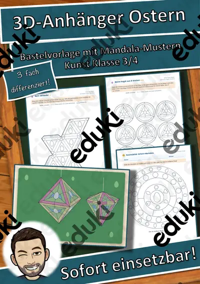
3D-Anhänger Ostern – Oktaeder, Diamant und Kugel zum Ausmalen und Basteln, 3-fach differenziert (Klasse 3/4)

3D-Anhänger Fasching – Oktaeder, Diamant und Kugel zum Ausmalen und Basteln, 3-fach differenziert (Klasse 3/4)

3D-Anhänger Frühling – Oktaeder, Diamant und Kugel zum Ausmalen und Basteln, 3-fach differenziert (Klasse 3/4)

3D-Anhänger Herzen und Muttertag – Oktaeder, Diamant und Kugel zum Ausmalen und Basteln, 3-fach differenziert (Klasse 3/4)
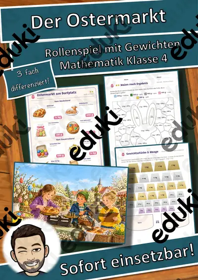
Der Ostermarkt – Rollenspiel Gewichte mit Brüchen ½ ¼ ¾ kg, 3-fach differenziert (Klasse 4)

Ostereiersuche im Garten – Rollenspiel Lagewörter und Zählen bis 20, 3-fach differenziert (Klasse 1)
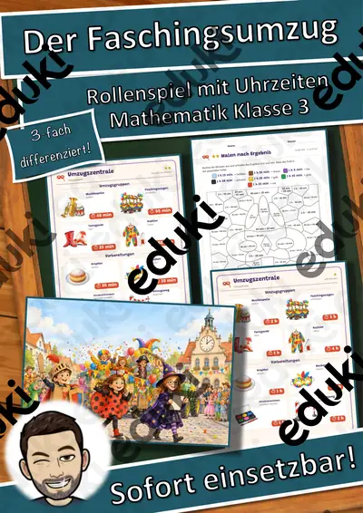
Der Faschingsumzug – Rollenspiel Zeitspannen und Fahrplan, Anfang und Ende berechnen, 3-fach differenziert (Klasse 3)
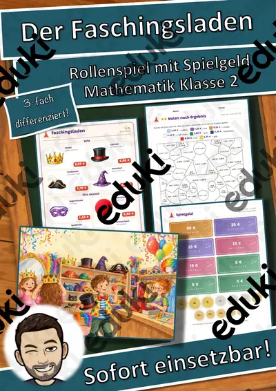
Der Faschingsladen – Rollenspiel Kombinatorik und Rechnen mit Geld, 3-fach differenziert (Klasse 2)

Lesespaziergang DaZ: Wir backen – Wortschatz mit Rätseln, 3-fach differenziert (Klasse 1–4)

Lesespaziergang DaZ: Spielen im Schnee – Wortschatz mit Rätseln, 3-fach differenziert (Klasse 1–4)

Lesespaziergang DaZ: Gemüse – Wortschatz mit Rätseln, 3-fach differenziert (Klasse 1–4)

Lesespaziergang DaZ: Sankt Martin – Wortschatz mit Rätseln, 3-fach differenziert (Klasse 1–4)
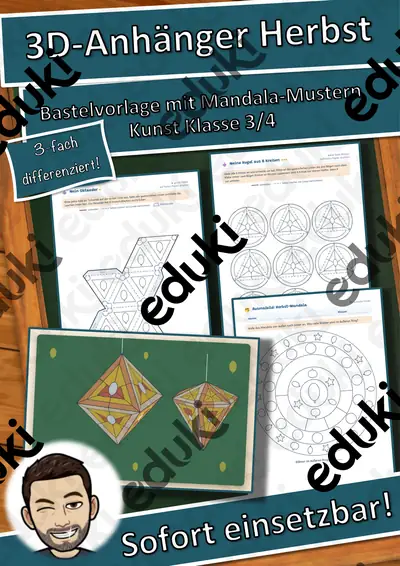
3D-Anhänger Herbst – Oktaeder, Diamant und Kugel zum Ausmalen und Basteln, 3-fach differenziert (Klasse 3/4)

Materialpaket Advent für die 5. Klasse: 3 Lesespurgeschichten mit Rätselaufgaben (Weihnachtsstern, Plätzchen backen, Handnähen)

Materialpaket Winter für die 9. Klasse: 5 Lesespurgeschichten mit Rätselaufgaben fächerübergreifend (Hungerwinter 1947, Permafrost, Christbaummarkt & mehr)

Materialpaket Winter und Advent für die 8. Klasse: 10 Lesespurgeschichten mit Rätselaufgaben fächerübergreifend (Polarlichter, Streusalz, Krippenbau & mehr)

Materialpaket Winter und Advent für die 7. Klasse: 10 Lesespurgeschichten mit Rätselaufgaben fächerübergreifend (Weihnachtsoratorium, Südpol, Eishockey & mehr)

Materialpaket Advent und Winter für die 6. Klasse: 7 Lesespurgeschichten mit Rätselaufgaben (Weihnachtsbasar, Saturnalien, Lichterfeste & mehr)

Materialpaket Rechenwelten im Winter für die 4. Klasse: 5 Mathe-Rollenspiele, 3-fach differenziert (Wintertombola, Schneeburg, Paketstation & mehr)

Materialpaket Rechenwelten im Winter für die 3. Klasse: 8 Mathe-Rollenspiele, 3-fach differenziert (Weihnachtsbäckerei, Lichterpark, Eisbahn & mehr)

Materialpaket Rechenwelten im Winter für die 2. Klasse: 6 Mathe-Rollenspiele, 3-fach differenziert (Weihnachtsmarkt, Kinderkino, Lebkuchen & mehr)

Materialpaket Rechenwelten im Winter für die 1. Klasse: 5 Mathe-Rollenspiele, 3-fach differenziert (Adventsmarkt, Plätzchenbäckerei, Wildpark & mehr)

Materialpaket Winter und Advent für die 4. Klasse: 5 Lesespurgeschichten mit Rätselaufgaben (Weihnachtsmarkt, Fröbelsterne, Sternbilder & mehr)

Materialpaket Schnee, Eis und Wintersport für die 3. Klasse: 10 Lesespurgeschichten mit Rätselaufgaben (Rodelbahn, Eisstock, Schneelabor & mehr)

Materialpaket Natur im Winter für die 3. Klasse: 10 Lesespurgeschichten mit Rätselaufgaben (Wintertiere, Winterwald, Schneespuren & mehr)

Materialpaket Advent und Weihnachten für die 3. Klasse: 8 Lesespurgeschichten mit Rätselaufgaben (Barbarazweige, Lebkuchen, Santa Lucia, Sternsinger & mehr)

Materialpaket Feste im Winter für die 2. Klasse: 6 Lesespurgeschichten mit Rätselaufgaben (Sankt Martin, Nikolaus, Advent, Weihnachten & Silvester)
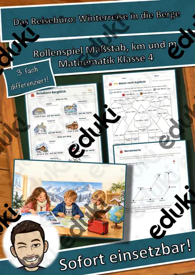
Das Reisebüro: Winterreise in die Berge – Rollenspiel Maßstab, Kilometer und Meter, 3-fach differenziert (Klasse 4)

3D-Anhänger Winter – Oktaeder, Diamant und Kugel zum Ausmalen und Basteln, 3-fach differenziert (Klasse 3/4)

3D-Anhänger Advent – Oktaeder, Diamant und Kugel zum Ausmalen und Basteln, 3-fach differenziert (Klasse 3/4)
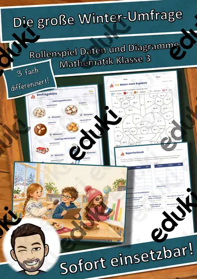
Die große Winter-Umfrage – Rollenspiel Daten, Tabellen und Säulendiagramme, 3-fach differenziert (Klasse 3)

Der Spielzeugladen vor Weihnachten – Rollenspiel Münzen und Scheine bis 20 €, 3-fach differenziert (Klasse 1)

Der Weg durchs Wichteldorf – Rollenspiel Wege, Lagewörter und Schritte zählen, 3-fach differenziert (Klasse 1)

Das Weihnachtspostamt – Rollenspiel Rechnen mit Euro und Cent, gemischte Schreibweise, 3-fach differenziert (Klasse 2)

Igel im Laubnest – Klappnest basteln mit Sachtext Winterschlaf, 3-fach differenziert (Tiere im Herbst, Klasse 1/2)

St.-Martins-Laterne aus einem Blatt – falten, einschneiden, rollen, mit Martinsgeschichte, 3-fach differenziert (Klasse 2/3)
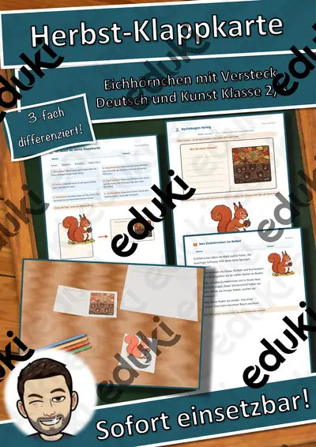
Herbst-Klappkarte Eichhörnchen – Figurenkarte basteln mit Sachtext, 3-fach differenziert (Tiere im Herbst, Klasse 2/3)

Flatter-Fledermaus am Stab – bewegliche Bastelfigur mit Sachtext, 3-fach differenziert (Halloween/Herbst, Klasse 2/3)
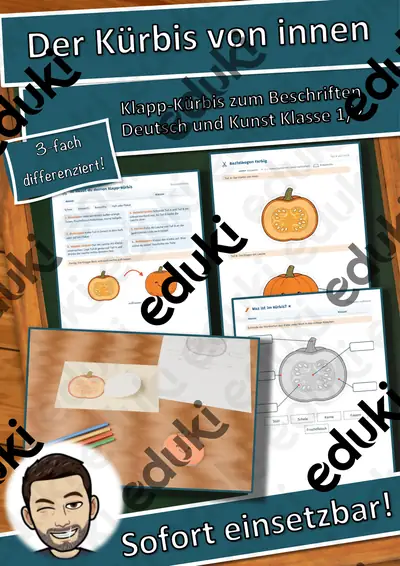
Der Kürbis von innen – Klapp-Kürbis basteln und beschriften, 3-fach differenziert (Halloween/Herbst, Klasse 1/2)

Halloween-Ziehkarten – Präpositionen sichtbar machen: über, vor, neben, auf, 3-fach differenziert (Klasse 1/2, DaZ)

Spinnen-Rätsel-Faltkarte – Halloween-Rätsel lesen und schreiben, Pop-up-Spinne, 3-fach differenziert (Klasse 2/3)

Mein Grusel-Meter – Halloween-Drehkarte basteln, Adjektive steigern und vergleichen, 3-fach differenziert (Klasse 2/3)

Halloween-Hüpffiguren – 6 Bastelvorlagen mit Federkugel, Steckbrief und Geschichte, 3-fach differenziert (Klasse 1/2)
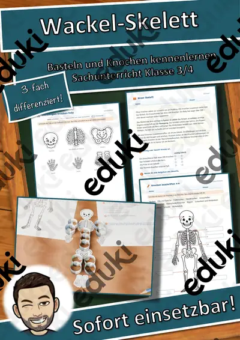
Halloween Wackel-Skelett – Bastelvorlage, Sachtext Skelett und Knochen beschriften, 3-fach differenziert (Klasse 3/4)

Halloween-Armbanduhr aus Papier – Uhrzeit lernen mit Bastelvorlage, 3-fach differenziert (Klasse 2/3)
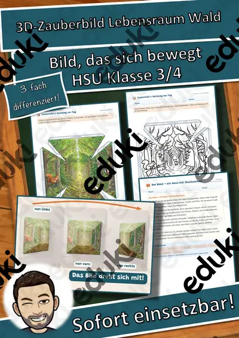
3D-Zauberbild Lebensraum Wald – Umkehrperspektive basteln, Sachtext und Forscherauftrag, 3-fach differenziert (Klasse 3/4)
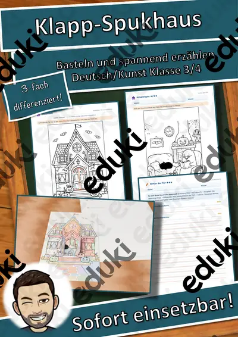
Klapp-Spukhaus zu Halloween – Bastelvorlage mit Schreibanlass und Wortspeicher, 3-fach differenziert (Klasse 3/4)

Halloween-Kegelfiguren – Körper Kegel basteln und erforschen, 3-fach differenziert (Mathematik/Kunst Klasse 3/4)

Halloween-Handpuppen – Bastelvorlage mit Sachtext und Puppentheater, 3-fach differenziert (Klasse 1/2)
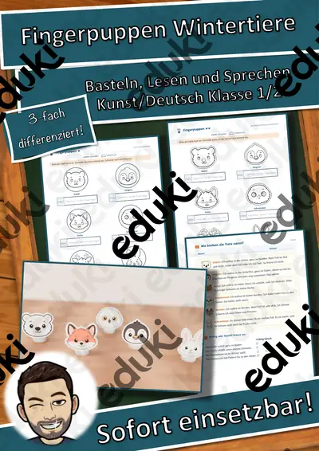
Fingerpuppen Wintertiere – Bastelvorlage mit Sachtext und Sprechaufgaben, 3-fach differenziert (Klasse 1/2)

Pop-up-Karten Weihnachten – Bastelvorlage mit Stufen-Pop-up, Motiven und Weihnachtsgruß, 3-fach differenziert (Klasse 3/4)

Wimpelkette Winter – Bastelvorlage mit Wintermotiven, Buchstaben WINTER und eigenen Wimpeln, 3-fach differenziert (Klasse 1–4)

Advents-Häuserstadt – Klassen-Adventskalender zum Basteln mit 24 Adventsaufgaben, 3-fach differenziert (Klasse 1–4)

Papier-Schneeflocken falten und schneiden – Winter-Bastelvorlage mit Sachtext, 3-fach differenziert (Klasse 2/3)
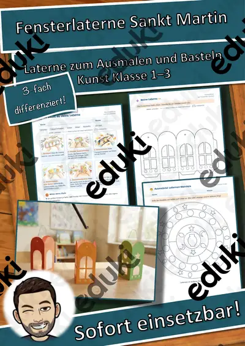
Fensterlaterne Sankt Martin – Laterne basteln mit Lesetext zur Legende, 3-fach differenziert (Klasse 1–3)
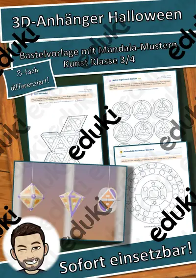
3D-Anhänger Halloween – Oktaeder, Diamant und Kugel zum Ausmalen und Basteln, 3-fach differenziert (Klasse 3/4)

Spiral-Gespenster zum Aufhängen – Halloween-Bastelvorlage mit Lesetext, 3-fach differenziert (Klasse 2/3)

Gespensterhaus aus meiner Hand – Halloween-Bastelvorlage mit Lesen und Schreiben, 3-fach differenziert (Klasse 1/2)
La panadería de jengibre – Rollenspiel Einmaleins und Teilen auf Spanisch, 3-fach differenziert (Klasse 2)
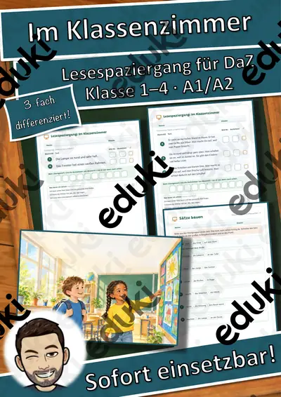
Lesespaziergang DaZ: Im Klassenzimmer – Wortschatz mit Rätseln, 3-fach differenziert (Klasse 1–4)

The Gingerbread Bake Shop – Rollenspiel Einmaleins und Teilen auf Englisch, 3-fach differenziert (Klasse 2)
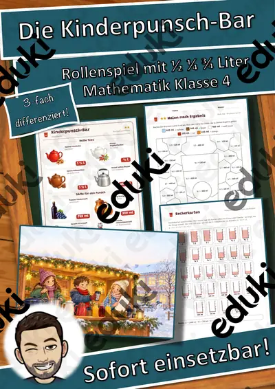
Die Kinderpunsch-Bar – Rollenspiel Brüche in Größen: ½ l, ¼ l, ¾ l und Milliliter, 3-fach differenziert (Klasse 4)

Das Schneeburg-Baubüro – Rollenspiel Würfelbauten, Baupläne und Rauminhalt, 3-fach differenziert (Klasse 4)
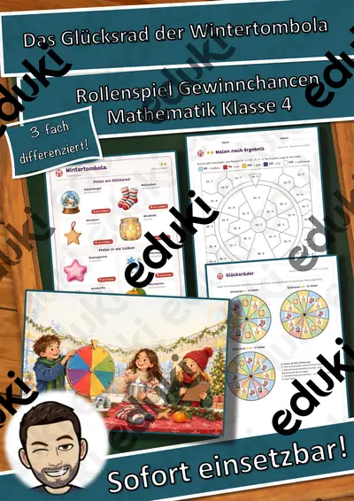
Das Glücksrad der Wintertombola – Rollenspiel Gewinnchancen und Wahrscheinlichkeit, 3-fach differenziert (Klasse 4)
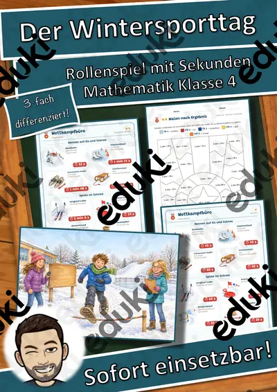
Der Wintersporttag – Rollenspiel Sekunden, Minuten und Sekunden umwandeln, Rangliste, 3-fach differenziert (Klasse 4)
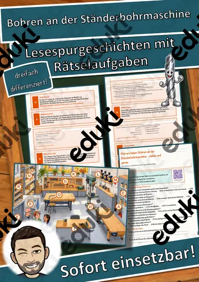
Lesespur: Bohren an der Ständerbohrmaschine: sicher und genau – Lesespurgeschichte mit Rätseln (Klasse 7)

Der Hofladen im Winter – Rollenspiel Hohlmaße l und ml, 3-fach differenziert (Klasse 4)

Die Schachtelwerkstatt fürs Fest – Rollenspiel Würfelnetze und rechter Winkel, 3-fach differenziert (Klasse 3)
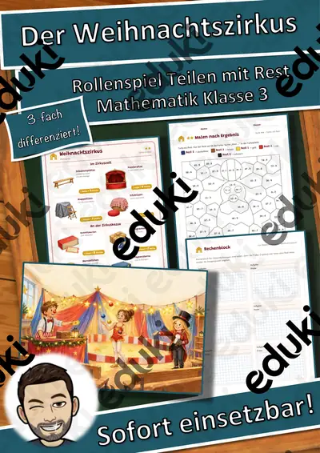
Der Weihnachtszirkus – Rollenspiel Division mit Rest, 3-fach differenziert (Klasse 3)
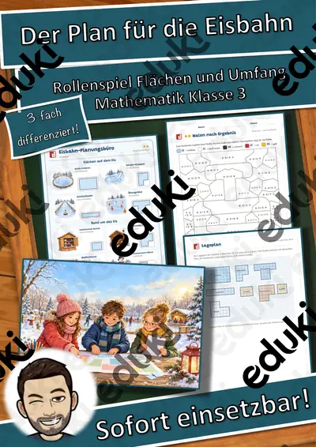
Der Plan für die Eisbahn – Rollenspiel Lagepläne, Flächen und Umfang, 3-fach differenziert (Klasse 3)
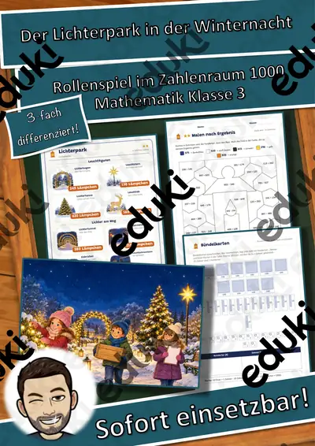
Der Lichterpark in der Winternacht – Rollenspiel Zahlenraum bis 1000, halbschriftlich und schriftlich rechnen, 3-fach differenziert (Klasse 3)
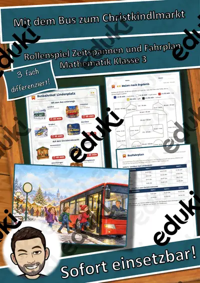
Mit dem Bus zum Christkindlmarkt – Rollenspiel Zeitspannen, Busfahrplan und Umsteigen, 3-fach differenziert (Klasse 3)

Die Schlittenbahn-Baustelle – Rollenspiel Längen km, m, cm und mm, 3-fach differenziert (Klasse 3)

Die Geschenkfabrik – Rollenspiel Körper, Ecken, Kanten und Flächen, 3-fach differenziert (Klasse 2)

Der Bratapfelstand – Rollenspiel Einmaleins mit Geld, Euro und Cent, 3-fach differenziert (Klasse 2)

Die Lichterketten-Werkstatt – Rollenspiel Muster und Zahlenfolgen, 3-fach differenziert (Klasse 1)

Die Fensterbild-Werkstatt – Rollenspiel Formen, Muster und Symmetrie, 3-fach differenziert (Klasse 1)
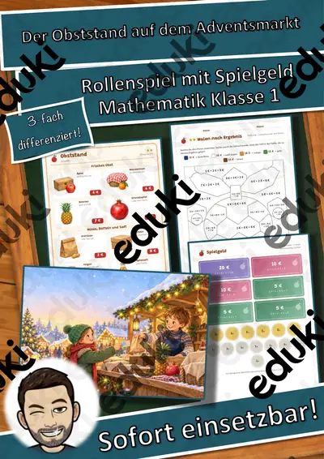
Der Obststand auf dem Adventsmarkt – Rollenspiel Rechnen mit Geld bis 20 €, Rückgeld, 3-fach differenziert (Klasse 1)

Lesespur: The Quiet Snowy Forest – Lesespurgeschichte mit Rätseln auf Englisch (Klasse 6)

Lesespur: Christmas Tree Farm – Lesespurgeschichte mit Rätseln auf Englisch (Klasse 6)

Lesespur: Breaking Through the Ice – Lesespurgeschichte mit Rätseln auf Englisch (Klasse 6)

Lesespur: Der Hund: unser treues Haustier – Lesespurgeschichte mit Rätseln (Klasse 5)

Lesespur: Winter Wildlife Trail – Lesespurgeschichte mit Rätseln auf Englisch (Klasse 6)

Lesespur: Die Wärmedämmung: wo das Haus Wärme verliert – Lesespurgeschichte mit Rätseln (Klasse 9)

Lesespur: Das Lebkuchenhaus: Quader, Netz und Oberfläche – Lesespurgeschichte mit Rätseln (Klasse 7)

Lesespur: Umtausch nach Weihnachten: Gewährleistung, Garantie und Kulanz – Lesespurgeschichte mit Rätseln (Klasse 8)

Lesespur: Die Märzrevolution 1848: Freiheit, Einheit und die Paulskirche – Lesespurgeschichte mit Rätseln (Klasse 8)

Lesespur: Der Vorlesetag: gut vorlesen, gespannt zuhören – Lesespurgeschichte mit Rätseln (Klasse 6)
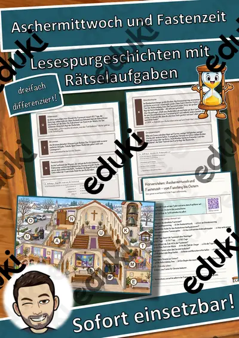
Lesespur: Aschermittwoch und Fastenzeit: vom Fasching bis Ostern – Lesespurgeschichte mit Rätseln (Klasse 6)

Lesespur: Der Tag der Muttersprache: viele Sprachen in meiner Klasse – Lesespurgeschichte mit Rätseln (Klasse 5)

Lesespur: Gute Vorsätze: was ich ändern will – Lesespurgeschichte mit Rätseln (Klasse 8)

Lesespur: Der Tag der Menschenrechte: Rechte für alle Menschen – Lesespurgeschichte mit Rätseln (Klasse 10)

Lesespur: Der Kaminofen: Verbrennung und Kohlenmonoxid – Lesespurgeschichte mit Rätseln (Klasse 8)

Lesespur: Der Jahresrückblick: eine Radiosendung entsteht – Lesespurgeschichte mit Rätseln (Klasse 7)
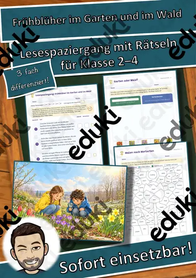
Lesespaziergang: Frühblüher im Garten und im Wald – 3-fach differenziert (★/★★/★★★), Klasse 2–4

Lesespur: Potato Harvest on the Farm – Lesespurgeschichte mit Rätseln auf Englisch (Klasse 6)

Lesespur: Die Lichterkette: Reihenschaltung und Parallelschaltung – Lesespurgeschichte mit Rätseln (Klasse 8)

Lesespur: Die Novemberrevolution 1918: vom Kaiserreich zur Demokratie – Lesespurgeschichte mit Rätseln (Klasse 9)

Lesespaziergang: Verkleiden und Feiern im Fasching – 3-fach differenziert (★/★★/★★★), Klasse 2–4

Lesespur: Die erste Steuererklärung: Lohnsteuer, Werbungskosten und Erstattung – Lesespurgeschichte mit Rätseln (Klasse 10)

Lesespaziergang: Tiere in Eis und Wüste – 3-fach differenziert (★/★★/★★★), Klasse 2–4

Lesespur: Richtig lüften im Winter: Luftfeuchtigkeit, Taupunkt und Schimmel – Lesespurgeschichte mit Rätseln (Klasse 9)

Lesespaziergang: Obst und Gemüse im Winter – 3-fach differenziert (★/★★/★★★), Klasse 2–4
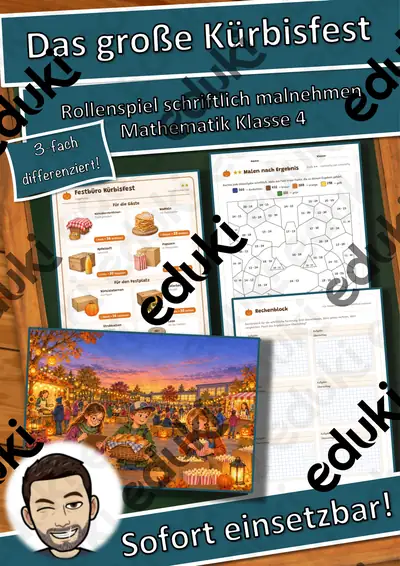
Das große Kürbisfest – Rollenspiel schriftliche Multiplikation und Überschlag, 3-fach differenziert (Klasse 4)
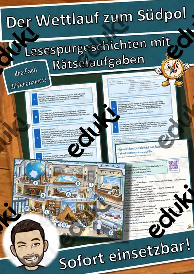
Lesespur: Der Wettlauf zum Südpol: eine Expedition ins ewige Eis – Lesespurgeschichte mit Rätseln (Klasse 7)

Lesespaziergang: Spuren im Schnee – 3-fach differenziert (★/★★/★★★), Klasse 2–4
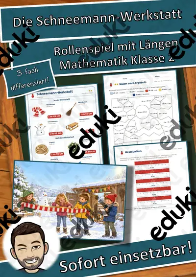
Die Schneemann-Werkstatt – Rollenspiel Längen m und cm, 3-fach differenziert (Klasse 2)
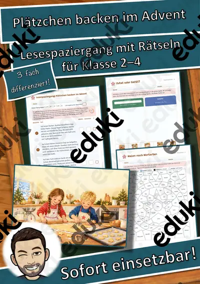
Lesespaziergang: Plätzchen backen im Advent – 3-fach differenziert (★/★★/★★★), Klasse 2–4
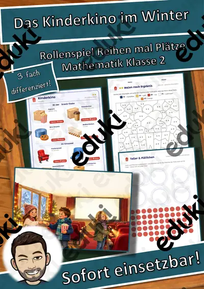
Das Kinderkino im Winter – Rollenspiel Einmaleins und Verteilen, 3-fach differenziert (Klasse 2)
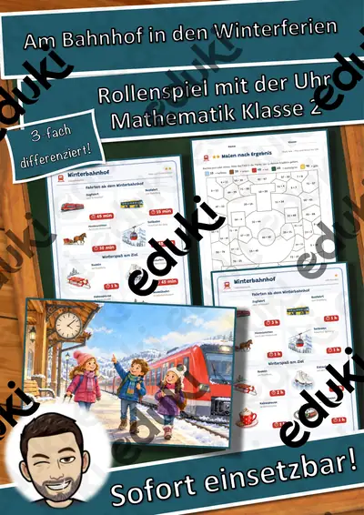
Am Bahnhof in den Winterferien – Rollenspiel Uhrzeit und Zeitspannen, 3-fach differenziert (Klasse 2)
Vogelzählung am Futterhaus – Rollenspiel Strichlisten auswerten und vergleichen, 3-fach differenziert (Klasse 1)

Die Weihnachtsbäckerei – Rollenspiel Gewichte kg und g, Rezepte verdoppeln, 3-fach differenziert (Klasse 3)

Winterfütterung im Wildpark – Rollenspiel Zahlen bis 20 zählen, zerlegen und ergänzen, 3-fach differenziert (Klasse 1)

Lesespaziergang: Zugvögel im Herbst – 3-fach differenziert (★/★★/★★★), Klasse 2–4
Lesespaziergang: Blätter und Bäume im Herbst – 3-fach differenziert (★/★★/★★★), Klasse 2–4
Die Lebkuchen-Backstube – Rollenspiel Einmaleins und Teilen, 3-fach differenziert (Klasse 2)
Paketstation im Advent – Rollenspiel Gewichte kg, g und t, Malnehmen mit Größen, 3-fach differenziert (Klasse 4)
Winterspiele im Schulhof – Rollenspiel Strichlisten, Vergleichen, sicher – möglich – unmöglich, 3-fach differenziert (Klasse 1)

Lesespaziergang: Vorräte der Tiere im Herbst – 3-fach differenziert (★/★★/★★★), Klasse 2–4
Die Wichtelwerkstatt – Rollenspiel Zeitspannen, Anfang und Ende berechnen, 3-fach differenziert (Klasse 3)

Lesespaziergang: Tiere im Winterwald – 3-fach differenziert (★/★★/★★★), Klasse 2–4
Die Bude am Weihnachtsmarkt – Rollenspiel Rechnen mit Geld, Euro und Cent, 3-fach differenziert (Klasse 2)

Lesespaziergang: Igel im Herbst – 3-fach differenziert (★/★★/★★★), Klasse 2–4
Die Gruselparty-Werkstatt – Rollenspiel Einmaleins und Verteilen, 3-fach differenziert (Klasse 2)

Lesespaziergang: Halloween-Nacht im Kürbisgarten – 3-fach differenziert (★/★★/★★★), Klasse 2–4
Die Plätzchenbäckerei – Rollenspiel Zahlen bis 20, Verdoppeln und Halbieren, 3-fach differenziert (Klasse 1)
Apfelernte im Obstgarten – Rollenspiel Gewichte kg und g, 3-fach differenziert (Klasse 3)

Am Kürbisstand – Rollenspiel Rechnen mit Geld bis 20 €, 3-fach differenziert (Klasse 1)

Rechnen im Winter-Café – Rollenspiel Rechnen mit Geld, 3-fach differenziert (Klasse 2–4)

Lesespur: Inside an Apple Tree – Lesespurgeschichte mit Rätseln auf Englisch (Klasse 9)

Materialpaket Herbst-Lesespuren für die 3. Klasse: 7 Lesespurgeschichten mit Rätselaufgaben (Kürbis, Igel, Laterne, Halloween & mehr)
Lesespur: Der Equal Pay Day: warum Frauen weniger verdienen – Lesespurgeschichte mit Rätseln (Klasse 9)

Lesespur: Lantern Night Adventure – Lesespurgeschichte mit Rätseln auf Englisch (Klasse 7)

Lesespur: Ostereier natürlich färben: Farbstoffe und Indikatoren – Lesespurgeschichte mit Rätseln (Klasse 8)

Lesespur: Weltwassertag: das versteckte Wasser in Alltagsdingen – Lesespurgeschichte mit Rätseln (Klasse 7)

Lesespur: Bärlauch: Frühlingskraut mit giftigen Doppelgängern – Lesespurgeschichte mit Rätseln (Klasse 6)

Lesespur: Der Nistkasten: ein Zuhause für Meisen bauen – Lesespurgeschichte mit Rätseln (Klasse 5)

Lesespur: Ramadan und Zuckerfest – Lesespurgeschichte mit Rätseln (Klasse 4)

Lesespur: Frühlingsanfang: Tag und Nacht sind gleich lang – Lesespurgeschichte mit Rätseln (Klasse 3)
Lesespur: Ostern: Bräuche rund ums Osterfest – Lesespurgeschichte mit Rätseln (Klasse 2)

Lesespur: Die Inventur: zählen, wiegen, vergleichen – Lesespurgeschichte mit Rätseln (Klasse 8)

Lesespur: Warum Eis schwimmt: die Anomalie des Wassers – Lesespurgeschichte mit Rätseln (Klasse 7)

Lesespur: Handwärmer: wie Wärme aus der Tasche entsteht – Lesespurgeschichte mit Rätseln (Klasse 8)

Lesespur: Polarlichter: wenn der Himmel grün leuchtet – Lesespurgeschichte mit Rätseln (Klasse 8)

Lesespur: Hefeteig: Ofen-Krapfen für die Faschingsfeier – Lesespurgeschichte mit Rätseln (Klasse 6)
Lesespur: Das Frühlingsfest: Neujahr in China – Lesespurgeschichte mit Rätseln (Klasse 5)

Lesespur: Fasching, Fastnacht und Karneval: Bräuche in der närrischen Zeit – Lesespurgeschichte mit Rätseln (Klasse 4)

Lesespur: Die Vogelhochzeit: ein sorbischer Brauch im Januar – Lesespurgeschichte mit Rätseln (Klasse 3)
Lesespur: Sicher schneiden: Krallengriff, Brückengriff und eine Gemüsesuppe – Lesespurgeschichte mit Rätseln (Klasse 5)

Lesespur: Sternbilder am Winterhimmel: Orion, Großer Wagen und Polarstern – Lesespurgeschichte mit Rätseln (Klasse 4)

Lesespur: Die Christrose: eine Blume blüht im Schnee – Lesespurgeschichte mit Rätseln (Klasse 6)

Lesespur: Der Weihnachtsstern: eine Pflanze aus Mexiko – Lesespurgeschichte mit Rätseln (Klasse 5)

Lesespur: Volksmusik in den Alpen: Jodeln, Hackbrett und Alphorn – Lesespurgeschichte mit Rätseln (Klasse 7)

Lesespur: Die Holzbläser: Flöte, Klarinette, Oboe und Fagott – Lesespurgeschichte mit Rätseln (Klasse 5)

Lesespur: Der Kalender: wie Caesar und Gregor das Jahr ordneten – Lesespurgeschichte mit Rätseln (Klasse 7)

Lesespur: Der Mann aus dem Eis: ein Gletscherfund aus der Jungsteinzeit – Lesespurgeschichte mit Rätseln (Klasse 6)
Keine Materialien gefunden – versuch einen anderen Suchbegriff oder Filter.